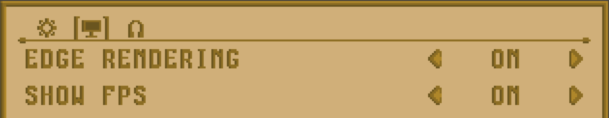
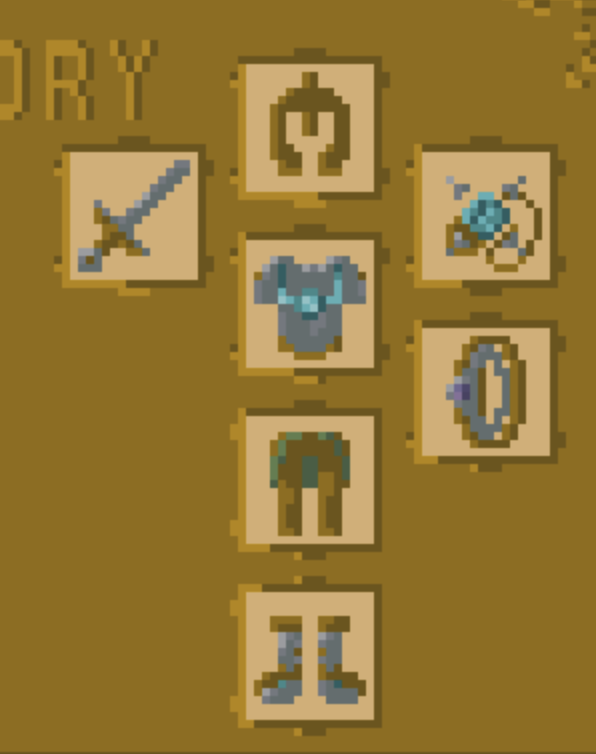
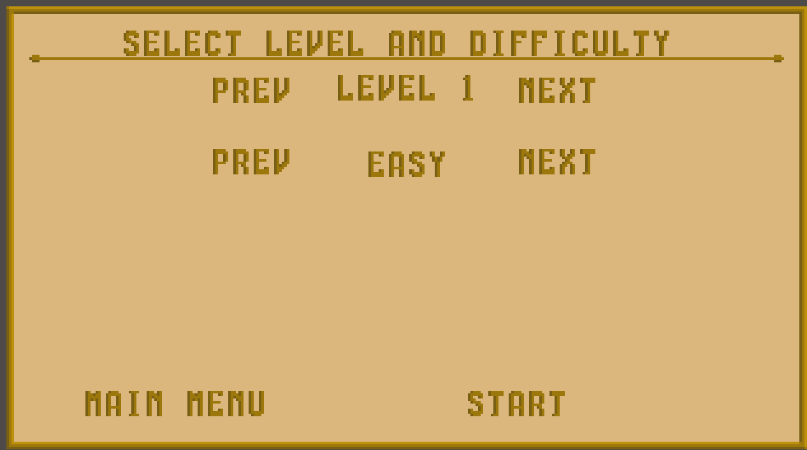
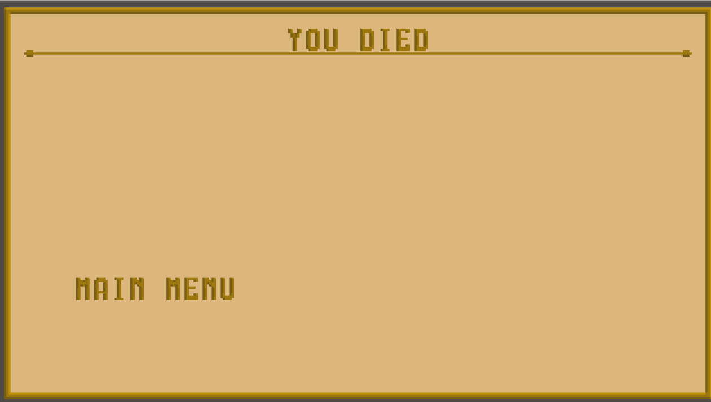
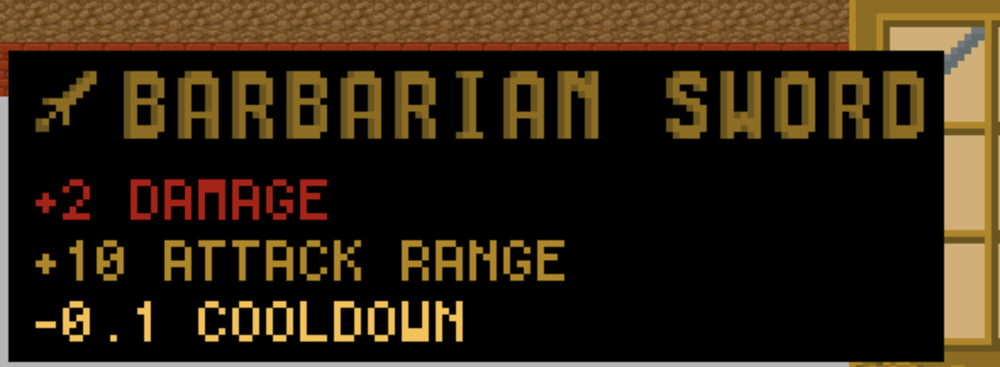
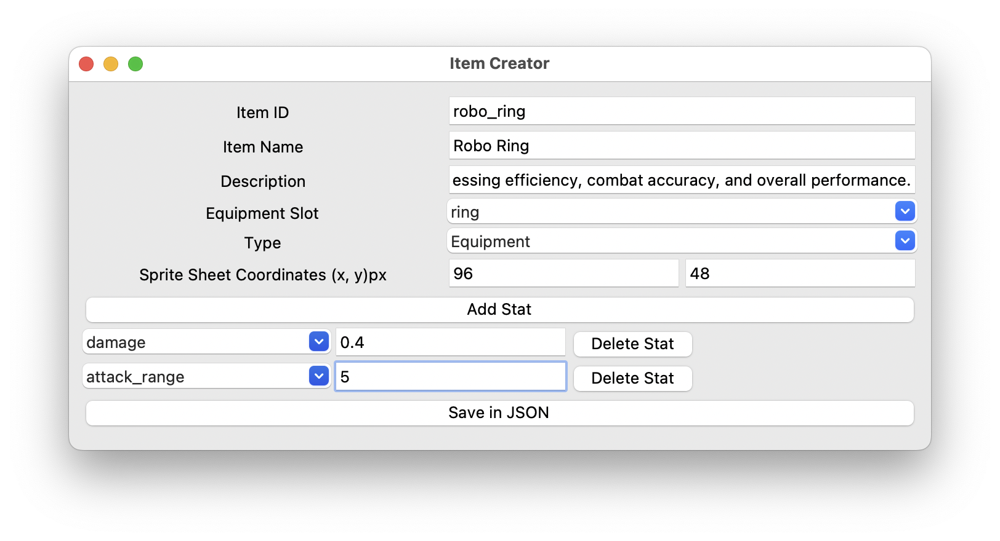
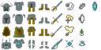
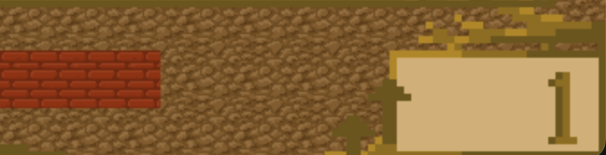

Sprint 4
- von: 03.06.2026
- bis: 08.07.2026
Woche 1 (3.6. - 10.6.)
-
500Block hat das Tile Edge Rendering eingeführt & eine grundlegende Struktur für Ingame UI Elemente eingeführt mitsamt einem Beispiel Hauptmenü
+ Tile Edge Rendering eingeführt, was momentan dazu dient, 3 Kantenübergänge zu malen
more details+ Erste Version an Gamestates eingeführt, welche es ermöglichen verschiedene UI Menüs zu malen (Playing, Esc_menü, Main_menu, Settings)
+ Erste Version eines Hauptmenüs erstellt
+ UI Manager erstellt, der alle Unterelemente verwaltet, also die Funktionen update, draw, handle_event aufruft
+ Erstes Test UI Element eingefügt, das ein basic UI Button ist mit sämtlicher Funktionalität
more details -
Pottwalle hat eine Lifebar implementiert, die dem Spieler anzeigt, wie viel Leben er noch zur Verfügung hat.
+ ein grundlegendes Waffensystem eingeführt, dass aus einer Oberklasse Weapon besteht, welche sich später in Unterklassen unterteilen kann, damit wir verschiedene Waffenarten einbauen können.
+ eine erste Waffe "Club" eingebaut, die in einem Kegel vor dem Spieler zuschlägt und allen getroffenen Gegnern Schaden zufügt.
Woche 2 (10.6. - 17.6.)
-
500Block hat einige Texturen hinzugefügt, für verschiedene UI Anwendungszwecke, sowie das Hauptmenü finalisiert, mit neu erstelltem Texturen-Button
+ Erste Texturenversion erstellt für Buffs, Inventar, Ingame UI, andere UI Elemente & Hauptmenü-Hintergrund
+ Das Hauptmenü soweit überarbeitet, dass es in einem funktionalen und erstmal finalen Zustand ist
+ Einen Textur-Button hinzugefügt, der statt mit Texten mit Texturen arbeitet
+ Ein erstes Ingame UI erstellt, welches die bestehende Lifebar einbaut
more details

500Block hat einige Texturen aktualisiert & hinzugefügt, die Hauptmenüschrift nun als malbare Schrift erstellt sowie ein Einstellungsmenü grundlegend angelebt mit neuem Optionen-Button
+ Texturen für ein erstes Itemset, Menu-Font-Schrift, Settings-Hintergrund hinzugefügt
+ Eine funktionierende Levelbar implementiert, mit xp speicherung in Player zusammen mit Funktionen zur Level-Verwaltung
+ Menu-Font-Klasse implementiert, welche es erlaubt, Text aus Strings in Grafiktext (wie im Main Menu) umzuwandeln und zu malen mit einigen Helfermethoden für unterschiedliche Zwecke
+ Einen Option-Button hinzugefügt, welcher es erlaubt, durch verschiedene Optionen durchzurotieren mit links / rechts Pfeil
+ Eine erste Version eines Einstellungemenüs erstellt
more details

bidD007 Hintergrundmusik hinzugefügt, die dem Game eine besondere Atmosphäre geben und mehr Dynamik einbringen soll
+ Musik startet sobald man das Game startet und läuft dann im Loop
+ eigene Datei
musik_manager.pyerstellt und diese ingame.pyimportiert+ Funktion
spiele_hintergrundmusik()nutztpygame.mixerzum Laden und Abspielen der MusikdateiArena_musik_epic.mp3in Endlosschleife+ PulseAudio-Treiber wird für Linux explizit erzwungen, damit die Musik zuverlässig auf verschiedenen Setups abgespielt wird
+ neues Asset:
more detailsArena_musik_epic.mp3Backforester hat die Klassen Interactable und ObjectCollision implementiert.
Diese kümmern sich um Objekte im Spiel mit denen der Spieler und Gegner über direkte Berührung interagieren können.
In ihnen gibt es Fallen und Health-Packs. Beide verändern die HP des interagierenden. Die Kollision wird durch überlappende Radius Kreise überprüft.
Zudem werden jetzt Gegner und Spieler sowohl wie Gegner untereinander voneinander weggeschoben werden.
-
Pottwalle hat an dem von 500Block gebauten Menu-System noch etwas an der Game-State logik geschraubt, da einige Menu-Übergänge noch nicht so funtkionierten wie geplant.
+ hat ein Esc-Menu erstellt, welches es erlaubt, das Spiel zu unterbrechen und wieder fortzusetzen.
Woche 3 (17.6. - 24.6.)
-
500Block Anpassung vieler UI-Elemente, auch Änderungen am ESC-Menu vor allem im grafischen Bereich, sowie das Hinzufügen eines Textmodusses für den Texture-Button, die Funktionen im Einstellungsmenü sowie die Funktion für Rewards mitsamt funktionierender Levelbar
+ Der Texture-Button kann jetzt auch einen Text-Modus nutzen, bei dem der Inhalt eines Strings nun in der Mitte steht
+ ein Reward-System implementiert, das nun auch Gegner XP gibt, und das in der Levelbar anzeigt
+ Anpassungen am Einstellungsmenü, sodass diese jetzt auch geändert werden können durch das Einstellung-Menü
+ Anpassungen am ESC-Menü von Valk0 damit die Knöpfe auch Korrekt angezeigt werden
more detailsbidD007 hat sowohl in der Enemy Klasse und Player Klasse die Kreise durch geeignete Figuren ersetzt und das ganze dann noch so skaliert, dass man Details erkennt und trotzdem das Format beibehalten wird
+ eigenen character Ordner unter Asset kreiert, wo die Bilder der Figuren drinnen sind
+ in der Player Klasse mehrere Frames eingebaut, die beim Drücken der linken Maustaste eine Bewegung auslösen sollen
more details -
Pottwalle hat ein Level-Editor-System geschrieben, dass es erlaubt, neue Level einfach als txt-Datei zu schreiben und diese wird dann automatisch vom Spiel umgewandelt.
+ 3 neue Level
+ Bewegungslogik angepasst. Wir hatten das Problem, dass man durch verschiedene Ereignisse in eine Wand gebuggt wurde und dann fest steckte. wir haben die Bewegungslogik nochmal grundsätzlich verändert und zusätzlich noch einen Slide eingebaut, so dass man nun an einer Wand entlang rutscht, wenn man dagegen läuft, anstatt stehen zu bleiben.
Woche 4 (24.6. - 29.6.)
-
500Block ein paar Änderungen am Einstellungsmenü, aber hauptsächlich eine Implementierung des Inventars mit Drag & Drop, Items mit Definition in externer Datei
+ Inventar-System hinzugefügt, das Drag and Drop implementiert, und Items von den Gegnern speichern kann
+ Items, die in einer JSON-Datei definiert sind, sowie optionale Consumables für die Zukunft
+ Diese Items werden mit einem Item-Loader ins Spiel geladen
+ Änderungen für mehrere Seiten im Einstelungsmenü (Generell, Grafik, Audio)
more details+ Die Angriffsrichtung wird nun von der Mausposition auf dem Bildschirm bestimmt
more details
bidD007 hat ein Story-Intro zwischen Hauptmenü und Spielstart eingebaut, im Retro-Terminal-Look mit Typewriter-Effekt
+ Text wird Buchstabe für Buchstabe eingetippt, inklusive Klick-Sound
+ Enter zeigt den Text sofort komplett an und springt zur nächsten Seite
+ Esc überspringt die Intro komplett
+ Neue Retro-Font für die Darstellung des Intros verwendet
+ Neu:
ui/intro_game.pymit der IntroScreen-Klasse+ Neu:
GameState.INTRO+
set_playing()zeigt jetzt zuerst die Intro und ruft danachstart_game()auf (bisheriger Inhalt vonset_playing, nur umbenannt)+ Neu:
resume_game()fürs Esc-Menü, damit das Fortsetzen nach der Pause ohne erneute Intro bzw. Reset läuft+ Neues Asset:
more detailsassets/sounds/type_click.wavBackforester hat einen Bug in ObjectCollision gefixed der es erlaubt hat, dass Gegner und Spieler durch auseinaderschiebn sich in Wände hineinschieben konnten und sich dann nicht mehr bewegen können.
Zudem wurde die Implementierung von Hitpoints zwischen Spieler und Gegner angepasst, sodass beide hp benutzen.
Außerdem wurden die Klassen RangedWeapon, Projectile und Bow implementiert, um Fernkampfwaffen zu implementieren und Gegnern Fernangriffe zu geben.<\p>
Zuletzt wurde noch das Erstellen von Gegnern erleichtert durch das Einführen von enemyTypes, wo verschiedene Gegnertypen beschrieben werden, sodass diese einfacher im weiteren Code eingefügt werden können.
Woche 5-1 (29.6. - 03.7.)
-
500Block Einige Anpassungen im Einstellungsmenü mit neuen Einstellungen (FPS), die ab sofort auch gespeichert werden. Symbole können nun geschrieben werden und der Spieler kann auch Equipment Items für Bonusattribute im neuen Stat System nutzen.
+ Einstellungen für Sound hinzugefügt
+ Die einzelnen Einstellungsspalten Modular erstellt, um einfachere Einstellungen hinzuzufügen
+ Seiten zum Inventar hinzugefügt, aus vorherigem Sprint vollendet
+ FPS Anzeige ingame hinzugefügt, welche auch an/aus geschaltet werden kann
+ Einstellungen können ab sofort auch gespeichert / geladen werden, speichern auch automatisch über Sessions hinweg beim Einstellen
+ Eine kleinere Schrift hinzugefügt, für FPS counter und spätere Tooltips
+ Es können nun auch Symbole im Text geschrieben werden mit "[BACK]", einfach im String, welche dann beim Rendern durch neue Texturen ersetzt werden
more details+ Es existieren nun Equipment-Items, welche ausgerüstet werden können, im Inventar per Drag & Drop sowie RMB
+ Equipment gibt Bonusstats dem Player je nach Item-Atrributen
+ Gegenstände können jetzt Drag & Dropped werden, auch in die Equipment-Slots
+ Ein Stat-System wurde hinzugefügt, das die Basis / Equipment / Bonusstats des Spielers zusammenrechnet
+ Modifier können genutzt werden, um temporäre Buffs zu geben
more details

-
Pottwalle hat ein level-choice menu integriert, dass es nun erelaubt, das Level auszuwählen, welches man spielen möchte und einen Schwierigkeitsgrad dazu.
+ Todesmenu erstellt, welches auploppt, wenn der Player auf 0 HP fällt und damit stirbt.
+ Siegesmenu, welches erscheint, falls die Bedingungen des gewählten Modus erfüllt wurden und der Player somit das Spiel gewinnt.


Woche 5-2 (03.7. - 06.7.)
-
500Block hat einige Bugs behoben, Items zu gegnern hinzugefügt sowie das Erstellen von Items vereinfacht. Außerdem wurden die Stats und Namen der Items als Tooltipps zum Anzeigen gebracht sowie die Anwendung der Stats implementiert
* Fiexed das Enemy Spawning Problem, dass zu viele Gegner gespawnt sind von und mit Valk0 und BackForester
+ Gegner geben dem Spieler ab jetzt auch Items bei deren Tod zu (25%, 6.25%, 3.125%)
more details+ Neue Zeichen zu beiden Schriftarten hinzugefügt
+ Einige neue Symbole hinzugefügt, für jeden Equipment-Typ eines
+ Es kann nun auch farbig geschrieben werden
+ Tooltipps für Items hinzugefügt, welche den Namen, Typ und deren Stats anzeigen
+ Die Stats der Tooltips sind auch nach einem Color Mapping eingefärbt
+ Tooltipps werden beim Hover über Items im Inventar angezeigt
+ Den Waffen-/Nahkampf-Waffen und Club jeweils hinzugefügt, dass diese nun von den Spielerstats und Items beeinflusst werden
* Einige Texturen-Updates und Bugfixes, die mit dem Inventar kamen
more details+ Ein Erstellungsprogramm, den Item Creator erstellt, in dem man auf grafische weiße Items zum Spiel hinzufügen kann
+ 22 neue Items mit unterschiedlichen Stats hinzugefügt
more details+ Level werden nun in der Ecke angezeigt, sowie die nötigen Texturen dafür
+ Der Spielerschaden, der bekommen wird, wird nun auch korrekt mit der Verteidigung verrechnet
more details



Pottwalle hat die Siegesbedingungen so angepasst, dass man nun wieder gewinnen kann, auch wenn immer gegner respawnen. Nun muss eine gewisse Menge Gegner getötet werden und nicht mehr alle.
+ einen Counter hinzugefügt, der dem Spieler sagr, wie viele Gegner schon erledigt wurden. 500Block hat das ganze dann noch erweitert, sodass auch die zu erreichende Anzahl an Gegnern mit dabei steht.
+ durch die neuen Grafiken waren die Hitboxen etwas buggy. Jetzt sind sie deutlich akurater, wenn auch noch nicht ganz perfekt.
+ den Bug gefixt, der dafür gesorgt hat, dass wenn man im Pause Menü auf Resume klickt, man automatisch in Level 1 mit leichter Schwierigkeit gespawnt wird, anstatt mit dem aktuellen Level weiter zu machen.